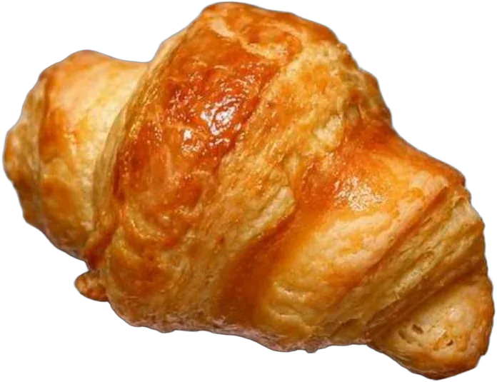
The physicsof baking
Twelve months, twelve recipes, and twelve small ways of being a person.
For my grandfather,whose hearing challenges first taught meto notice the quiet details of everyday life;
for my family, who filled our kitchenwith patience and warmth;
and for every curious baker who has ever foundscience hidden in a whisk, a rise, or a golden crust.
Nothing in an oven goes backwards.
Melted chocolate sets again when it cools. A cake cannot be unbaked. Proteins that have unfolded do not fold again; a crust that has browned stays brown. Physicists call this irreversibility, and file it under the second law of thermodynamics.
Heraclitus said no one steps into the same river twice. No one puts the same dough into the oven twice, either. Every bake is a one-way street, which is perhaps why it is worth paying attention while it happens.
- 34°Butter melts
- 62°Egg whites set
- 70°Starch gelatinises
- 100°Water becomes steam, 1,700 times its volume
- 150°Maillard browning
- 170°Sugar caramelises
Each month, a recipe, a law of physics,
and a word to live by for thirty days.
The book gives every month a “personal identity theme”: a quality the recipe asks of you before it gives anything back.
- JanSimplicityCoconut ballsFour ingredients. Egg white sets at 62 °C and holds the rest together.
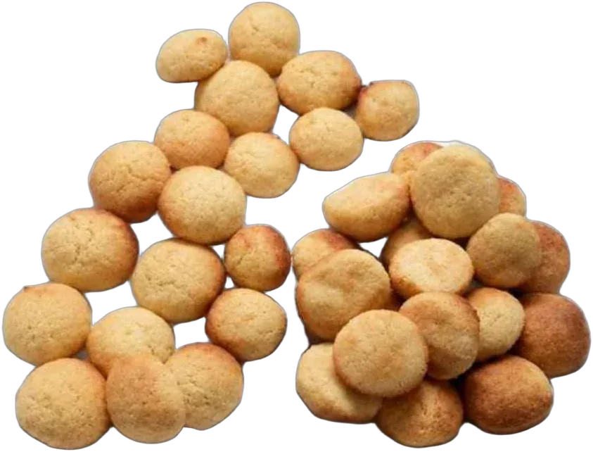
- FebPatienceCroissantsFold, chill, fold again. Layers cannot be hurried into being.

- MarGrowthBreadYeast makes the gas; gluten decides how much of it stays.
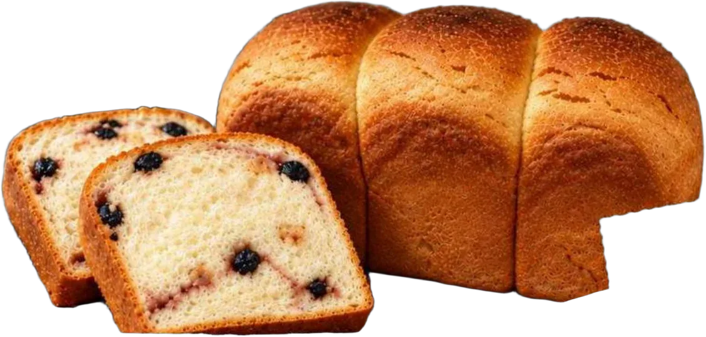
- AprRenewalLemon cheesecakeAn emulsion: two things that would rather separate, held in one smooth body.
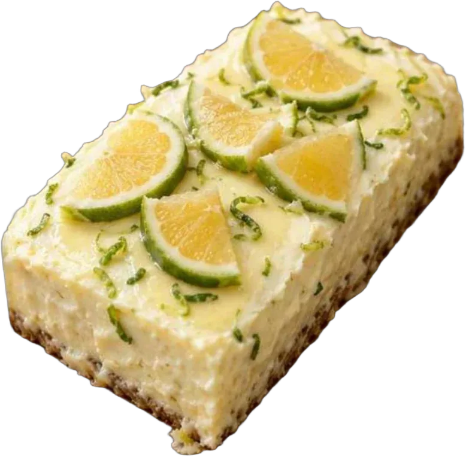
- MayDelicacyMacaronsA meringue foam. Structure made almost entirely of air.
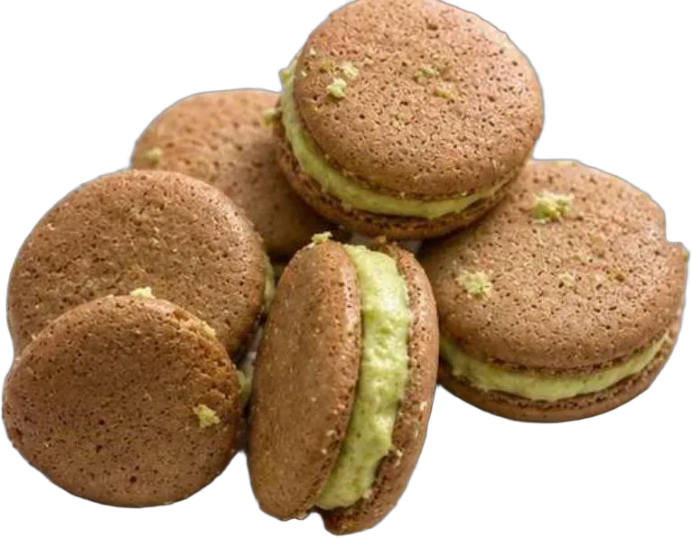
- JunLightnessChiffon cakeLightness is not found. It is whipped in, then protected.
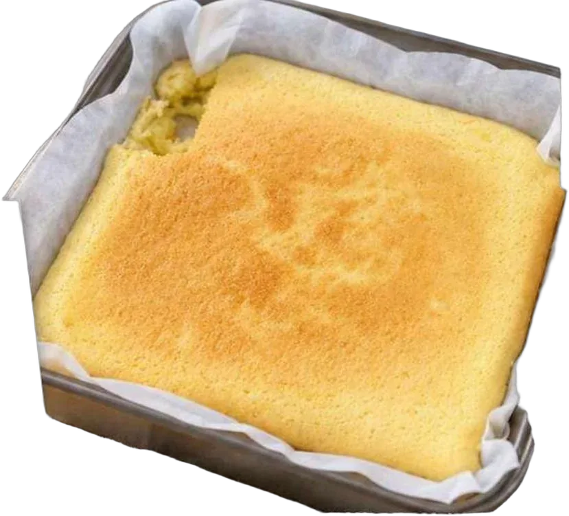
- JulCalmMatcha sconesCold butter and a light hand. Overworked dough turns tough.
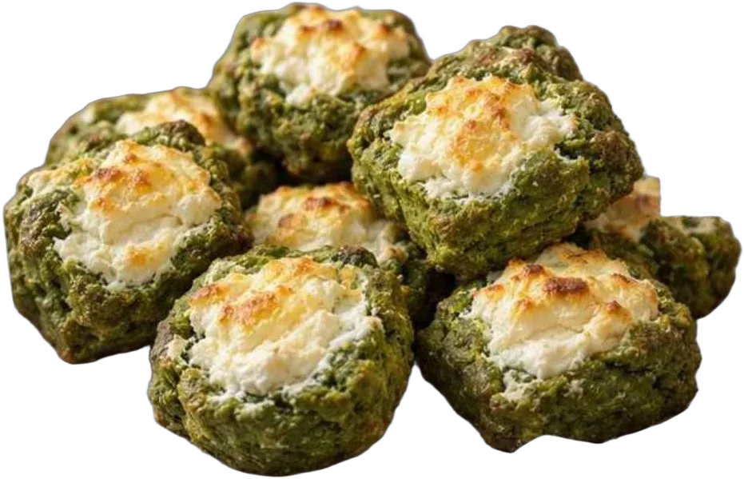
- AugPrecisionEgg tartsHeat travels from the outside in; a custard sets in a narrow window.
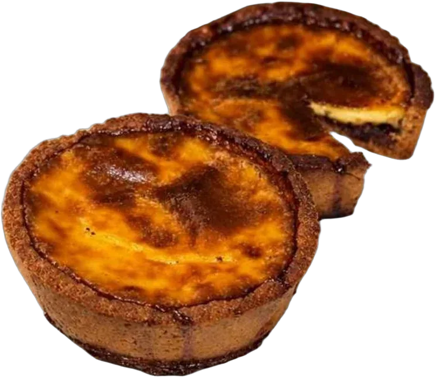
- SepRestraintOsmanthus mung bean cakeStarch sets as water leaves. Nothing added that is not needed.
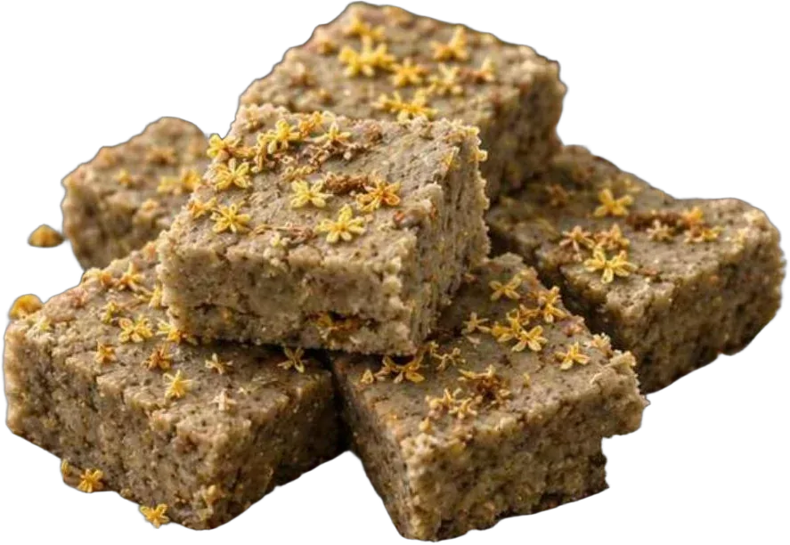
- OctPlayfulnessDonutsHot oil moves heat so fast the crust forms before the inside notices.
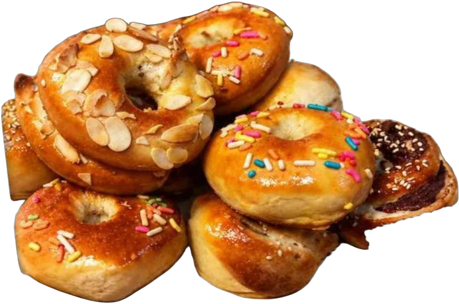
- NovBoldnessBasque cheesecakeBurnt on purpose: a steep gradient, dark outside, soft within.
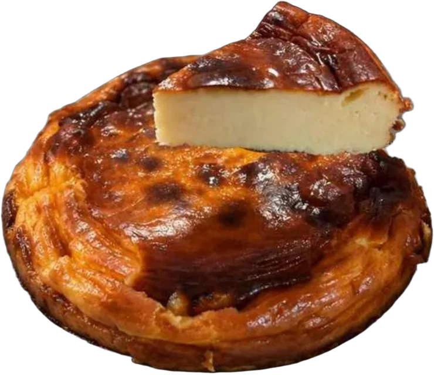
- DecWarmthButter cookiesViscosity decides how far a cookie spreads. Butter decides how it tastes.
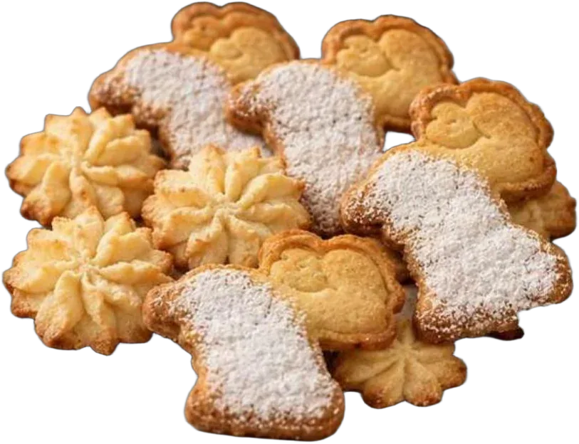
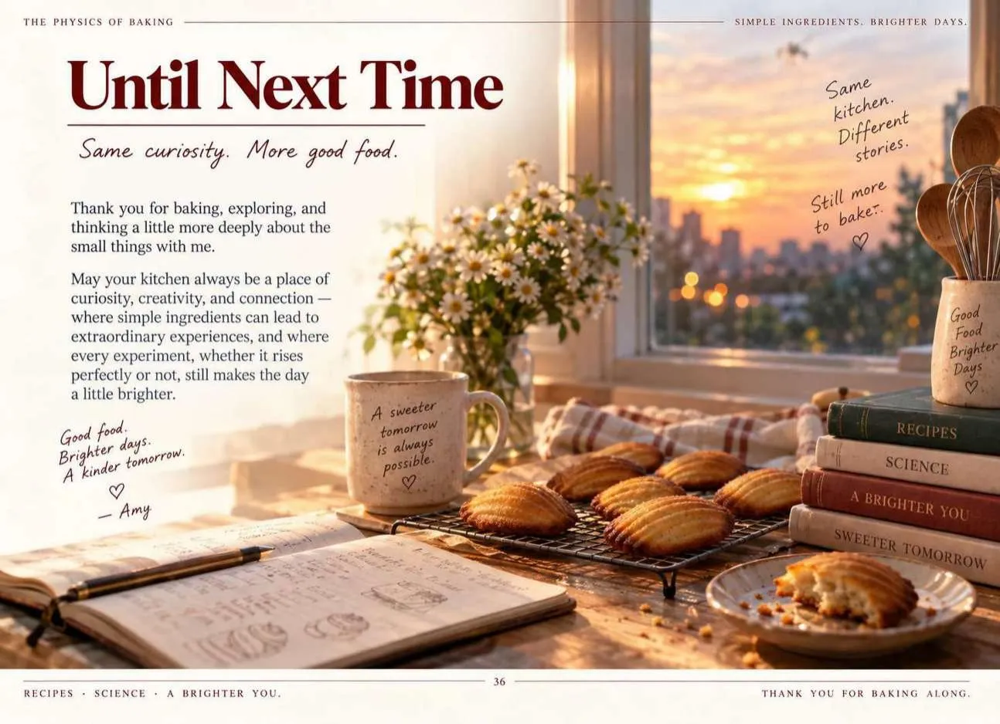
In 1913, Proust tasted a madeleine dipped in tea and a whole childhood came back to him. Taste is the sense that keeps time.
I wrote this book for a grandfather who hears less of the world than he used to. Recipes are one of the ways a family keeps talking when other ways get harder. The last page of the book, by no accident, is a plate of madeleines.
“In every rise, crumble, and caramelised edge, there is both memory and method.”
38 pages. Every photograph, every diagram, every word.
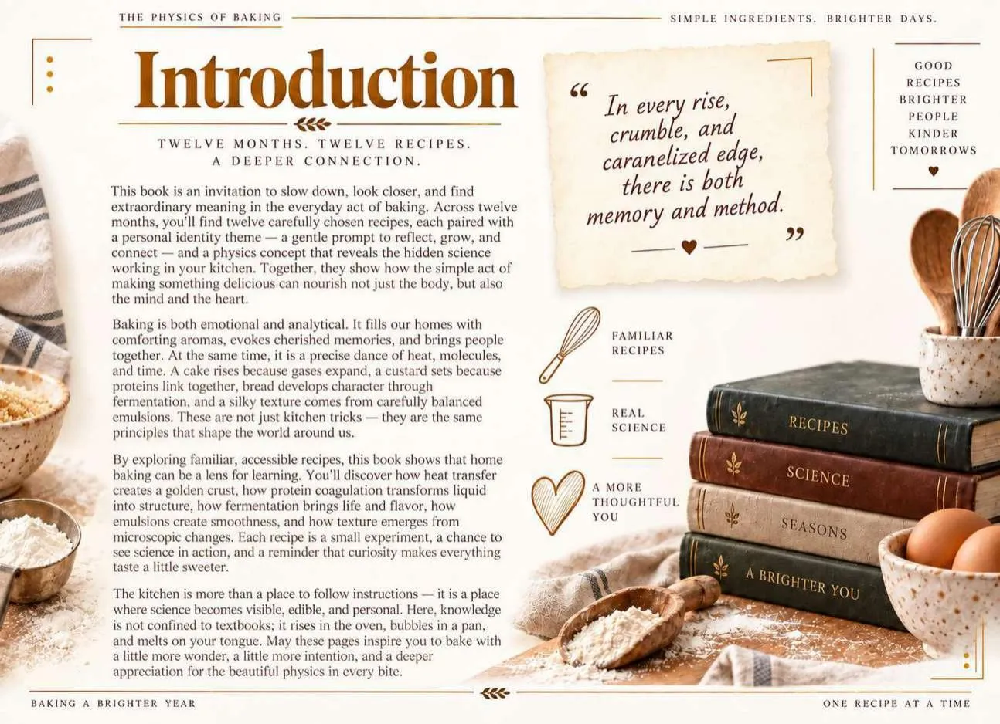
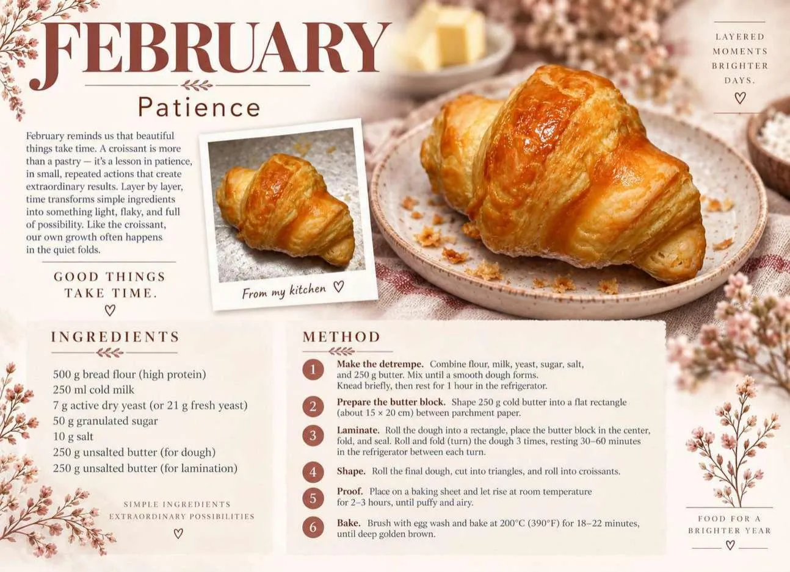
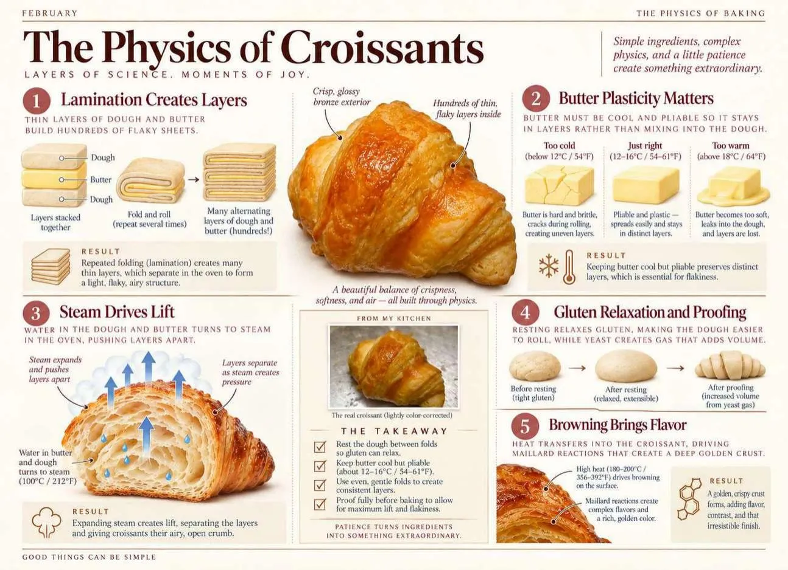